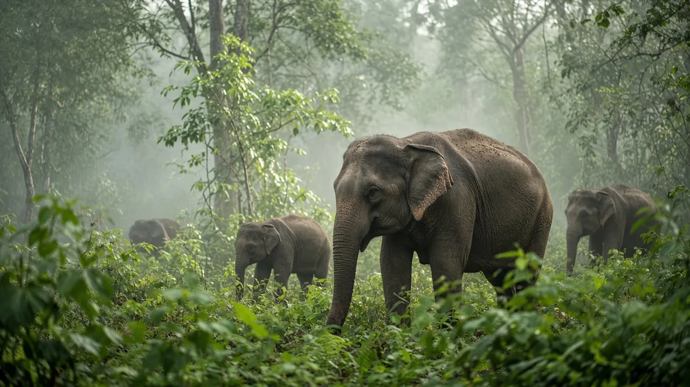

Oregon Zoo elephant calf Tula-Tu treated for EEHV
Tula-Tu, the Asian elephant calf born at the Oregon Zoo in Portland in February 2025, is being treated for elephant endotheliotropic herpesvirus (EEHV), a disease that can kill young elephants within days. After a week of treatment, the zoo said on 31 October 2026 that she remains stable and that her blood results give grounds for cautious optimism.

What happened
On 24 October 2026, keepers at the Oregon Zoo noticed that Tula-Tu, its 21-month-old Asian elephant calf, had less energy than usual and was behaving differently. Veterinarians took blood samples, found a low white-cell count and started antiviral medicine straight away, before any diagnosis was confirmed. The next day the Oregon Veterinary Diagnostic Laboratory at Oregon State University confirmed a raised level of elephant endotheliotropic herpesvirus (EEHV) in her blood. She has also been given plasma transfusions.
A week later, the zoo reported that the calf was stable. Its director of animal health, Dr. Carlos Sanchez, said stable viral loads, normal platelet counts and improving white-cell counts suggested "a favorable trajectory", while cautioning that she is not out of danger yet. The zoo has not said how long treatment will last.
Why EEHV is so feared
EEHV is present in nearly all Asian elephants, in the wild and in zoos. Most carry it harmlessly, but calves are vulnerable once the antibodies they received from their mothers fade, typically between about one and eight years old, and before they build their own immunity. When the virus becomes active it can turn life-threatening within a few days, which is why early detection and fast treatment matter so much. According to The Oregonian, scientists have confirmed around 200 EEHV deaths in Asian elephant range countries.
The disease has a painful history at the Oregon Zoo: Tula-Tu's older half-sister Lily died suddenly of EEHV in 2018 at the age of six. Tula-Tu, born on 1 February 2025 and now weighing more than 1,300 pounds (about 590 kg), has been tested regularly for the virus since birth.
A vaccine, but a different strain
This summer Tula-Tu received two doses of an experimental vaccine against the most common strain of EEHV. Her current infection is caused by a different strain. The zoo says the vaccine may offer some protection, but researchers do not yet know whether, or how much. Blood samples from her treatment will feed into ongoing research on how elephants respond to the vaccine, including work involving Oregon State University and Baylor University.
Context
Elephants are remarkably resistant to some diseases, such as cancer (see why don't elephants get cancer?), but EEHV remains one of the biggest threats to young Asian elephants and a major reason calves die before adulthood. For more on how long elephants normally live, see how long do elephants live? We will update this post if the zoo announces further news on Tula-Tu's condition.
Frequently asked questions
What is EEHV?
Elephant endotheliotropic herpesvirus is a group of herpesviruses carried by almost all Asian elephants, wild and captive. Most elephants carry it without harm, but in young calves it can become active and cause fatal internal bleeding within a few days.
Why are young elephants most at risk from EEHV?
Calves are protected at first by antibodies from their mother. As those fade, usually between about one and eight years of age, and before the calf builds its own immunity, an active EEHV infection can be very dangerous.
How is Tula-Tu being treated?
According to the Oregon Zoo, vets started antiviral medicine on 24 October 2026 after keepers noticed changes in her energy and behaviour and a blood test showed a low white-cell count. A laboratory at Oregon State University then confirmed a raised viral load, and she has received plasma transfusions.
Was Tula-Tu vaccinated against EEHV?
Yes. She received two doses of an experimental vaccine this summer against the most common EEHV strain. Her current infection is a different strain, and the zoo says it is not yet known whether the vaccine gives any protection against it.
Sources
Cite this page
APA
TuskWise. (2026, November 1). Oregon Zoo elephant calf Tula-Tu treated for EEHV. https://tuskwise.com/blog/oregon-zoo-elephant-calf-tula-tu-treated-for-eehv.html
MLA
“Oregon Zoo elephant calf Tula-Tu treated for EEHV.” TuskWise, 1 Nov. 2026, tuskwise.com/blog/oregon-zoo-elephant-calf-tula-tu-treated-for-eehv.html.
Chicago
TuskWise. “Oregon Zoo elephant calf Tula-Tu treated for EEHV.” TuskWise. Last modified November 1, 2026. https://tuskwise.com/blog/oregon-zoo-elephant-calf-tula-tu-treated-for-eehv.html.